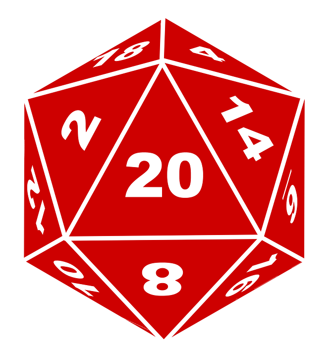
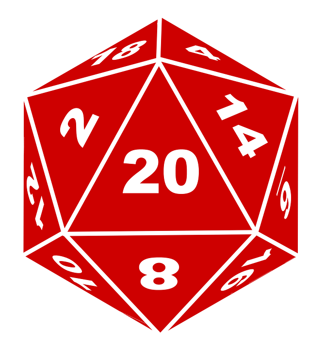

Content for running and playing the game to make challenging scenarios in a multiverse and framework of gritty realism. Customized characters the way you want, in the deadly situations you always envisioned. It has its own set of mechanics (see labels of “ ICore”), and has been adapted to the ©D20™ system (see labels of “ D20″).
ICore”), and has been adapted to the ©D20™ system (see labels of “ D20″).
The Gaming Experience to Expect: We believe gaming should be a social event and ultimately to have fun; If all you want to use is your imagination, you can read any number of books. When people get together and share the gaming experience, it is often far more rich, memorable, and interesting than any single person’s imagination. Expectations and experience will be different for everyone – each person can have different reactions to situations that come up during the play. Incarna tries to foster a positive collaborative group experience, instead of competitive, to succeed at their endeavors and common goals. The mechanics add to the levels of interdependence that many systems that came before have introduced. Additionally, we have found that players who challenge themselves – choosing to play within limitations, who see risk and character death seriously – will have the most fulfilling time. Knowing your character cannot die tends to promote power-gaming and cheapens the satisfaction of solving puzzles and surviving the scenarios the GM provides.
Player/adventuring groups should check out the group options for cooperative bonuses and incentives.
The ©Players Handbook is the best reference work for players, otherwise use the linked paged content reference materials – many sections have specific callouts for helping players role-play and use the rules to their advantage. Also, check out the periodic Infinite Incarnations publication for updates and musings.
For select players, some content is hosted on the web site.
The ©Dungeon Master Guide is the best reference for Game Masters (GM’s); They create and/or use settings, building encounters with creatures, and decide the outcome of actions within the game, describing them through narration. They must also decide what rewards are appropriate for the character (based on player interaction). The job of game master can be a complex and difficult task, depending on the story, style, and expectations of the gaming group. If you have ever been in the role of game master and/or are already comfortable with the responsibilities involved, then you probably do not need to be advised on how to handle game play or group issues. Good GMing is more than just a mastery of the mechanics. It involves aspects of human behavior, creativity, story-telling, material knowledge and many other things. You must be able to both plan well, and adapt to any situation. GM Guidelines and tools are available for assisting in building encounters and resolving actions, as well as advisory materials on running groups and building group dynamics.
Resolve a scripted or published play encounter, or plan your own!
Who We Are
Incarna is primarily the brain-child of Kelly Berger! Thanks everyone for all their support over the years. Especially those assisting with development, testing, and opportunities.
Arabus Grenier: See my hosted page for more information.
Tom Potter: I hope I can bring fresh eyes to how a system and world should look to new comers to be welcoming and fun and easy to delve into! See my hosted page for more information.
See a list of credits for contributors, developers, and testers.
Whats Happening
Infinite Incarnations by Kelly Berger is licensed under a Creative Commons Attribution-NonCommercial-ShareAlike 3.0 Unported License. Based on work at http://incarna.net. Permissions beyond the scope of this license may be available at http://incarna.net/business.

– Thats nice, what the heck does it mean!?